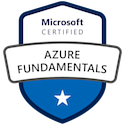
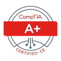
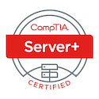
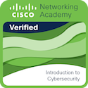

Work Experience
Service Desk Technician
Company: Logicalis
Duration: April 2024 – Present
- Delivered technical support for end-users, ensuring efficient resolution of desktop and software-related issues.
-
Key Metrics:
- Average resolution time: 0.83 days.
- 85% of incidents resolved without reassignment.
- 72% of tickets resolved on the same day.
- Administered Microsoft 365 and Azure environments, ensuring seamless operation and user access.
- Managed Active Directory and Group Policy configurations, enhancing security and improving system reliability.
Service Desk Representative / Subject Matter Expert
Company: Insight
Duration: Oct. 2022 – March 2024
- Provided end-to-end support for desktop hardware, software, and telecommunications systems.
- Resolved complex technical issues across diverse user environments, maintaining customer satisfaction.
- Developed user documentation and conducted training sessions to streamline support processes.
- Consistently met and exceeded service targets through proactive problem-solving and efficient issue resolution.
IT Technician
Company: Completeful Technologies LLC
Duration: Feb. 2022 – June 2022
- Configured and maintained Windows and Linux servers to support critical business operations.
- Optimized Active Directory infrastructure and Group Policies to improve network functionality and security.
- Supported end-users with tailored solutions, increasing operational efficiency and reliability.
Technical Support (Contract)
Company: Hughes Network Services
Duration: Sept. 2021 – Feb. 2022
- Diagnosed and resolved network connectivity issues for residential and small-business customers.
- Maintained secure IP network configurations, ensuring reliable service availability.
Help Desk Technician, Work Study
Company: Remington College
Duration: Dec. 2019 – April 2021
- Provided technical support for students and faculty, ensuring seamless operation of hardware and software systems.
- Assisted with the configuration of campus-wide IT resources, contributing to smooth daily operations.
Education
Associate of Science in Database Administration
Institution: Remington College, Lafayette, LA
Graduation Year: 2021
Graduated with Honors (GPA: 3.84). Consistently achieved Dean’s List recognition and demonstrated excellence in database management, system analysis, and IT fundamentals.
Information Security and Administration Program
Institution: My Computer Career
Completion Year: 2022
Completed with a perfect GPA of 4.0 and earned the prestigious WCITP World Class IT Professional Award for academic excellence. Specialized in cybersecurity, networking, and information systems management.
Skills & Expertise
Here’s a snapshot of the skills and technologies I specialize in:
Technical Support
Expert in troubleshooting hardware, software, and networking issues.
System Administration
Experience managing and maintaining servers, networks, and internal systems.
Cloud Solutions
Proficient in Microsoft Azure, AWS, and cloud infrastructure management.
Cybersecurity
Implementing data security protocols, securing networks, and mitigating threats.
Networking
Deep understanding of LAN, WAN, and network protocols with hands-on experience in VLANs, IP routing, and more.
Virtualization
Experienced in VMware ESXi, Hyper-V, and other virtualization technologies.
Technologies & Tools
- Active Directory
- VMware ESXi
- Microsoft Azure
- Linux & Ubuntu
- Windows Server
- PowerShell & Bash
- Networking (TCP/IP, DNS, DHCP)
- Python (for automation)
My Homelab
My homelab provides a secure, segmented, and scalable infrastructure for both home and work environments. It allows me to experiment with IT solutions, learn new technologies, and stay ahead in the tech world.
Key Components
- Cox Panoramic WIFI Gateway: Provides internet access to downstream routers.
- TP-Link Archer AX1800 Router: Manages Home Network VLAN with isolation for IoT and guest traffic.
- pfSense Router: Handles internal routing and VLAN management.
- D-Link DES-3550 Switch: VLAN-aware switch managing wired devices.
- Dell R710 Virtualization Host: Runs VMware ESXi 6.7 for essential services like Active Directory, web hosting, and network monitoring.
VLAN Configuration
- VLAN 10: Home Network (192.168.1.0/24)
- VLAN 20: Homelab Devices (192.168.2.0/24)
- VLAN 30: IoT Devices (192.168.3.0/24)
- VLAN 40: Guest Network (192.168.4.0/24)
- VLAN 99: Management VLAN (10.8.8.0/24)
Network Diagram
A visual representation of my homelab setup:

Certifications
Below are the certifications I’ve earned, showcasing my expertise and dedication to IT.
-

Microsoft Certified: Azure Fundamentals
Validation of foundational knowledge in cloud services and Microsoft Azure.
-
MTA: Networking Fundamentals
Certified in networking fundamentals, covering networking concepts and infrastructure.
-
MTA: Windows Server Administration
Certified in Windows Server administration fundamentals, including server installation and management.
-

MTA: Security Fundamentals
Certified in security fundamentals, covering security layers, OS security, and network security.
-

CompTIA IT Fundamentals (ITF+)
Certification validating essential IT skills, including IT literacy, troubleshooting, and hardware basics.
-

CompTIA A+ ce
Entry-level certification for hardware, software, and networking skills. Covers installation and troubleshooting.
-

CompTIA Server+
Certification demonstrating expertise in server hardware, software, installation, and troubleshooting.
-

Introduction to Cybersecurity
Fundamental cybersecurity course certification issued by Cisco, covering security tools and technologies.
-
Linux Essentials
Certification from Linux Professional Institute covering basic Linux skills and system administration.
-
Google IT Support
Certification covering IT support fundamentals, including troubleshooting, networking, and system administration.